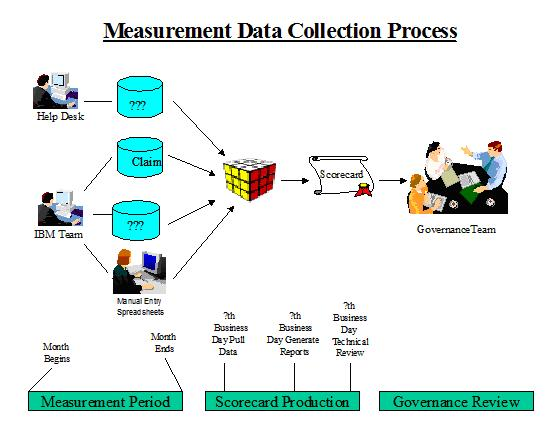

| Example: Measurement Business Policy |
 |
|
| Related Elements |
|---|
The following is a sample set of policies supporting measurement implementation: Human Resources Category
Quality Category
Cost and Schedule Category
Customer Category
Process Category
Productivity and Output Category
Measurement Implementation Policy (Governance) Plan The example below shows a process to be followed for collecting the required data for the scorecard in an automated fashion from CLAIM, a Help Desk system, or any other data collection facilities. It is important that the days and months are specified, so that each month the process is repeatable and stable. In this example, the data required for the scorecard is collected in an automated fashion from Claim, and Help desk system. In addition, some data is collected manually by a business office on spreadsheets. All of the data for the performance period needs to be input into the appropriate system or spreadsheet by the end of the “agreed to” business day of the following month. On the “agreed to” business day of the month following the performance period being measured, the data is pulled into the measurement data repository and the scorecard is produced and reviewed for calculation related errors. Once the scorecard has passed the technical review it is passed to the governance team to perform a business review of the data. This process is depicted in the chart below. 
A documented change request process and form must be used in order to ensure the integrity of the data in the scorecard
and in the scorecard reports. Work items may not be randomly added unless this process is followed and
documented. This results in the creation of an audit trail. Measurement Change Request (MCR) A short description of the requested addition or change should be listed as the subject of the MCR. The requestor will forward the MCR to the appropriate person for review and approval. 1. Person Initiating the MCR: Name 2. Description of the change requested:
(Include the level of detail required, example, Account, Business area, Workitem) 3. Time frame required for the change: Time 4. Justification for the change: Justification 5. People who will be involved in/effected by this change if implemented: Names 6. Alternative to implementation of this change: Alternative |
| © Copyright IBM Corp. 1987, 2012 All Rights Reserved Property of IBM These materials are intended only for use as part of an IBM engagement |